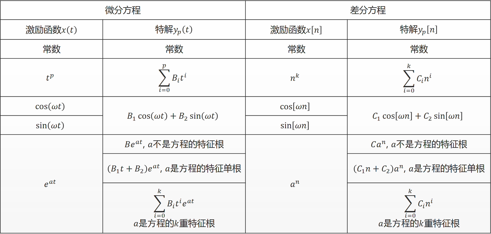

数字信号处理复习总结Part1
数字信号处理复习总结
01 信号的时域分析
一、信号的分类
-
周期信号的 $x(t),y(t)$ 的周期为$T_1$和$T_2$，若周期之比 $T_1/T_2$ 为有理数，则其和信号 $x(t)+y(t)$ 仍然是周期信号，其周期为 $T_1$ 和 $T_2$ 的最小公倍数。
-
周期信号可能分解为周期信号, 非周期信号也可能分解为周期信号
-
连续正弦信号一定是周期信号,而正弦序列不一定是周期序列。两连续周期信号之和不一定是周期信号,而两周期序列之和一定是周期序列。
-
能量信号与功率信号
| 连续信号 | 离散信号 | |
|---|---|---|
| 能量 | $$W=\lim\limits_{T\rightarrow\infty}\int_{-T}^{T} | x(t) |
| 功率 | $$P=\lim\limits_{T\rightarrow\infty}\frac{1}{2T}\int_{-T}^{T} | x(t) |
- 能量信号：$0<W<\infty,P=0$。（信号的能量有限）
- 功率信号：$W\rightarrow\infty,0<P<\infty$。（信号的能量无限，但其功率是有限的）
- 直流信号与周期信号都是功率信号
-
信号 $x(t)$ 可以是一个既非功率信号,又非能量信号。但一个信号不可能同时既是功率信号, 又是能量信号。周期信号都是功率信号；非周期信号可能是能量信号($t\rightarrow\infty,x(t)=0$)也可能是功率信号($t\rightarrow\infty,x(t)\ne0$)。
-
因果信号：当 $t<0$ 时 $x(t)=0$，当 $t>0$ 时 $x(t)\ne0$。
二、典型的信号
- 虚指数信号 $x(t)=Ae^{j\omega_0t}$
- 周期性：$x(t)=x(t+T_0)=e^{j\omega_0t}=e^{j\omega_0(t+T_0)}$
- 若 $\omega_0\ne0$，基波周期满足 $\omega_0T_0=2\pi k$，即 $T_0=\frac{2\pi}{|\omega_0|}$
- $\omega_0$ 越大，信号震荡速率越高
- 复指数信号 $x(t)=Ae^{st}$
- $A$ 使用极坐标表示：$A=|A|e^{j\theta}$
- $s$ 使用笛卡尔坐标表示：$s=r+j\omega_0$，$x(t)=Ae^{st}=|A|e^{rt}e^{j(\omega_0t+\theta)}$
- $x(t)=Ae^{st}=|A|e^{rt}e^{j(\omega_0t+\theta)}=|A|e^{rt}\cos(\omega_0t+\theta)+j|A|e^{rt}\sin(\omega_0t+\theta)$，具有指数衰减振幅的正弦信号常称为阻尼正弦振荡。
- 抽象信号 $Sa(t)=\frac{\sin t}{t}$
-
$Sa(0)=\lim\limits_{t\rightarrow0}\frac{\sin t}{t}=1,Sa(k\pi)=0$
-
==$\int_{-\infty}^{\infty}Sa(t)dt=\pi,\int_{0}^{\infty}Sa(t)dt=\frac{\pi}{2}$==
-
$$\int_{0}^{\infty}\frac{\sin(t)dt}{t}=\int_{0}^{\infty}\sin(t)dt\int_{0}^{\infty}e^{-tx}dx=\int_{0}^{\infty}\int_{0}^{\infty}\sin(t)e^{-tx}dtdx$$
$$I=\int_{0}^{\infty}\sin(t)e^{-tx}dt=-\frac{1}{x}\int_{0}^{\infty}\sin(t)d(e^{-tx})=-\frac{1}{x}\sin(t)e^{-tx}\big|{t=0}^{\infty}+\frac{1}{x}\int{0}^{\infty}\cos(t)e^{-tx}dt=\frac{1}{x}\int_{0}^{\infty}\cos(t)e^{-tx}dt$$
$$=\frac{1}{x}\int_{0}^{\infty}\cos(t)e^{-tx}dt=-\frac{1}{x^2}\int_{0}^{\infty}\cos(t)d(e^{-tx})=-\frac{1}{x^2}\cos(t)e^{-tx}\big|{t=0}^{\infty}+\frac{1}{x^2}\int{0}^{\infty}e^{-tx}d(\cos(t))$$
$=\frac{1}{x^2}-\frac{1}{x^2}I$
解得： $I=\frac{1}{1+x^2}$
$\int_{0}^{\infty}\frac{\sin(t)}{t}=\int_{0}^{\infty}\int_{0}^{\infty}\sin(t)e^{-tx}dtdx=\int_{0}^{\infty}\frac{1}{1+x^2}dx=\arctan(x)\big|_{x=0}^{\infty}=\frac{1}{2}$
-
$sinc(t)=\frac{\sin ct}{ct}$
- 虚指数序列：$x[n]=e^{j\omega_0n}$
-
$e^{j\omega_0n}$ 周期为 $2\pi$，不具有随 $\omega_0$ 增加而增加震荡速率的性质
-
周期性：$x[n+N]=x[n]=e^{j\omega_0n}=e^{j\omega_0n}e^{j\omega_0N}$，满足 $\omega_0 N=m2\pi,m\in\mathbb{N}_{+}$
-
连续信号 $e^{j\omega_0t}$ 离散时间序列信号 $e^{j\omega_0 n}$ $\omega_0$ 不同,信号不同 $\omega_0$ 相差 $2\pi$ 整倍数,信号相同 任何 $\omega_0$ 信号均为周期信号 满足 $\omega_0 N=m2\pi,m\in\mathbb{N}_{+}$ 才是周期信号 基波周期：$$\begin{cases} \omega_0=0, & 无定义 \ \omega_0\ne0, & T_0=\frac{2\pi}{ \omega_0
- 单位脉冲序列：$\delta[n]=\begin{cases} 1, &n=0\ 0, &n\ne 0\end{cases}$
- $x[n]\delta[n]=x[0]\delta[n],x[n]\delta[n-n_0]=x[n_0]\delta[n-n_0]$
- 使用单位脉冲表示任意离散时间信号
- 单位脉冲序列：$u[n]=\begin{cases} 1, &n\ge0\ 0, &n< 0\end{cases}$
- $u[n]$ 可看作延时脉冲的叠加：$u[n]=\sum\limits_{k=0}^{\infty}\delta[n-k]$
- 单位阶跃序列和单位脉冲序列的相互表示：$\delta[n]=u[n]-u[n-1],u[n]=\sum\limits_{k=-\infty}^{n}\delta[k]$
- 矩形序列：$r[n]=\begin{cases} 1, &0\le n\le N-1\ 0, &o.w.\end{cases},r[n]=u[n]-u[n-N]=\sum\limits_{m=0}^{N-1}\delta[n-m]$
- 斜变序列：$x[n]=nu[n]=\sum\limits_{k=0}^{\infty}k\delta[n-k]$
- 奇异信号：信号本身或其导数具有不连续点(跳变)，例如单位斜变信号 $r(t)=\begin{cases}t,&t\ge0\0,&t<0\end{cases}$
- 单位阶跃信号：$u(t)==\begin{cases}1,&t>0\0,&t<0\end{cases}$
- 冲激信号 $\delta(t)$
- 冲激信号的狄拉克定义：==$\delta(t)=0(t\ne0);\int_{\infty}^{\infty}\delta(t)dt=1$==
- ==抽样（筛选）特性：$x(t)\delta(t-t_0)=x(t_0)\delta(t-t_0)$==
- $\int_{-\infty}^{+\infty}x(t)\delta(t-t_0)dt=\int_{-\infty}^{+\infty}x(t_0)\delta(t-t_0)dt=x(t_0)\int_{-\infty}^{+\infty}\delta(t-t_0)dt=x(t_0)$
- $x(t)=\int_{-\infty}^{+\infty}x(\tau)\delta(\tau-t)d\tau=\int_{-\infty}^{+\infty}x(\tau)\delta(t-\tau)d\tau=x(t)*\delta(t)$
- $\delta(\alpha t)=\frac{1}{|\alpha|}\delta(t)(\alpha\ne0)$，$\alpha=-1$ 有 $\delta(-t)=\delta(t)$，因此 $\delta(t)$ 为偶函数
- $\delta(at+b)=\frac{1}{|a|}\delta(t+\frac{b}{a})$
三、信号的分解
-
基于冲激信号进行信号分解：$x(t)=\int_{-\infty}^{\infty}x(\tau)\delta(t-\tau)d\tau,x[n]=\sum\limits_{k=-\infty}^{\infty}x[k]\delta[n-k]$
-
若 $n$ 个函数 $g_1(t),g_2(t),…,g_n(t)$ 构成函数集，且在区间 $(t_1,t_2)$ 满足 $\begin{cases} <g_i(t),g_j(t)>=0,i\ne j\<g_i(t),g_i(t)>=K_i^2\end{cases}$，则函数集为正交函数集。
重构函数 $x(t)=\sum\limits_{r=1}^{n}c_rg_r(t),\overline{\epsilon^2}=\frac{1}{t_2-t_1}\int_{t_1}^{t_2}[x(t)-\sum\limits_{r=1}^{n}c_rg_r(t)]^2dt,其中c_r=\frac{\int_{t_1}^{t_2}x(t)g_r(t)dt}{\int_{t_1}^{t_2}g_r^2(t)dt}=\frac{<x(t),g_r(t)>}{K_r^2}$ -
若 $n$ 个函数 $g_1(t),g_2(t),…,g_n(t)$ 构成正交函数集，不存在 $\mathscr{g}(t)$ 满足 $0<\int_{-\infty}^{\infty}\mathscr{g}^2(t)dt<\infty$ 且 $<\mathscr{g}(t),g_r(t)>=0,r=1,2,…,n$，则 $g_1(t),g_2(t),…,g_n(t)$ 构成完备正交函数集。
-
帕塞瓦尔定理：$\int_{t_1}^{t_2}x^2(t)dt=\sum_\limits{r}^{\infty}c^2_r$，
信号所含有的功率恒等于此信号在完备正交函数集中各分量功率的总和。 -
冲激偶信号 $\delta^{'}(t)=\frac{d\delta(t)}{dt}$
-
$\int_{-\infty}^{\infty}\delta^{'}(t)dt=0$
-
$\delta^{‘}(-t)=-\delta^{’}(t)$
-
==筛选特性：$x(t)\delta^{‘}(t-t_0)=x(t_0)\delta^{’}(t-t_0)-x^{‘}(t_0)\delta(t-t_0)$==
$x(t)\delta(t-t_0)=x(t_0)\delta(t-t_0)$
两边对 $t$ 求导可得：$x^{’}(t)\delta(t-t_0)+x(t)\delta^{‘}(t-t_0)=x(t_0)\delta^{’}(t-t_0)$
$x(t)\delta^{‘}(t-t_0)=x(t_0)\delta^{’}(t-t_0)-x^{‘}(t)\delta(t-t_0)=x(t_0)\delta^{’}(t-t_0)-x^{'}(t_0)\delta(t-t_0)$ -
抽样特性：$\int_{-\infty}^{\infty}x(t)\delta^{‘}(t-t_0)dt=-x^{’}(t_0)$
$\int_{-\infty}^{\infty}x(t)\delta^{‘}(t-t_0)dt=\int_{-\infty}^{\infty}[x(t_0)\delta^{’}(t-t_0)-x^{‘}(t_0)\delta(t-t_0)]dt$
$=x(t_0)\int_{-\infty}^{\infty}\delta^{’}(t-t_0)dt-x^{‘}(t_0)\int_{-\infty}^{\infty}\delta(t-t_0)dt=0-x^{’}(t_0)=-x^{'}(t_0)$ -
==展缩特性：$\delta^{‘}(\alpha t)=\frac{1}{\alpha|\alpha|}\delta^{’}(t)(\alpha\ne0),\delta^{‘}(at+b)=\frac{1}{a|a|}\delta^{’}(t+\frac{b}{a})(a\ne0)$==
-
$x(t)\delta^{‘}(t)=x^{’}(t),x(t)\delta^{‘}(t-t_0)=x^{’}(t-t_0)$
$x(t)*\delta^{‘}(t-t_0)=\int_{-\infty}^{+\infty}x(k)\delta^{’}(t-t_0-k)dk=-\int_{-\infty}^{+\infty}x(k)\delta^{‘}(k-(t-t_0))dk$
$=-\int_{-\infty}^{+\infty}[x(t-t_0)\delta^{’}(k-(t-t_0))-x^{‘}(t-t_0)\delta(k-(t-t_0))]dk$
$=-x(t-t_0)\int_{-\infty}^{+\infty}\delta^{’}(k-(t-t_0))+x^{‘}(t-t_0)\int_{-\infty}^{+\infty}\delta(k-(t-t_0))dk$
$=0+x^{’}(t-t_0)=x^{'}(t-t_0)$
02 系统的时域分析
一、系统的分类和描述
- 系统的输入输出描述：$N$ 阶微分方程或 $N$ 阶差分方程，如 $L\frac{di(t)}{dt}+Ri(t)=x(t)$
- 系统的状态空间描述包括连续时间系统和离散时间系统
- 连续时间系统
- 系统的输入激励与输出响应都必须为连续时间信号
- 连续时间系统的数学模型是微分方程
- 离散时间系统
- 系统的输入激励与输出响应都必须为离散时间信号
- 离散时间系统的数学模型是差分方程
- 优点：可靠性高，随环境变化小；系统参数精度高； 利用存储器存储信息；应用更灵活；易消除噪声，易处理低频信号；多维信号处理技术成熟
- 系统互联的方式：串联（级联）、并联和反馈连接
- 记忆系统和无记忆系统
- 无记忆系统：系统的输出只取决于系统该时刻的输入
- 恒等系统：$y(t)=x(t);y[n]=x[n]$
- 累加器：$y[n]=\sum\limits_{k=-\infty}^{n}x[k]$
- 延时单元：$y[n]=x[n-1]$
- 可逆系统
- 系统在不同的输入下，导致不同的输出，则系统可逆
- 如果一个系统可逆，则存在一个逆系统，系统与逆系统级联，作用等效于恒等系统
- 因果系统
- 当且仅当输入信号激励系统时才产生系统输出响应的系统
- ==如果响应 $y(t)$ 并不依赖于将来的激励如 $x(t+1)$，那么系统就是因果的==
- 稳定系统
- 稳定系统在微小的输入下的响应不会发散
- 指有界输入产生有界输出的系统
- 线性系统
- 如果一个输入信号是由几个信号加权组成的，则线性系统的输出是系统对这组信号中每一个响应的加权和
- 齐次性（比例性）：若 $x_1(t)\rightarrow y_1(t)$，则 $Kx_1(t)\rightarrow Ky_1(t)$
- 可加性（叠加性）：若 $x_1(t)\rightarrow y_1(t),x_2(t)\rightarrow y_2(t)$，则 $x_1(t)+x_2(t)\rightarrow y_1(t)+y_2(t)$
- 连续线性特性：若 $x_1(t)\rightarrow y_1(t),x_2(t)\rightarrow y_2(t)$，则 $\alpha x_1(t)+\beta x_2(t)\rightarrow \alpha y_1(t)+\beta y_2(t)(\alpha,\beta为任意常数)$
- 离散线性特性：若 $x_1[n]\rightarrow y_1[n],x_2[n]\rightarrow y_2[n]$，则 $\alpha x_1[n]+\beta x_2[n]\rightarrow \alpha y_1[n]+\beta y_2n$
- 系统的齐次性和可加性可以不同时满足
$y(t)=Re[x(t)]$ 满足可加性，不满足齐次性
$y(t)=\frac{[x^{'}(t)]^2}{x[t]}$ 满足齐次性，不满足可加性
- 时变系统和时不变系统
- 系统的输出响应与输入激励的关系不随输入激励作用于系统的时间起点而改变，就称为时不变系统。否则，就称为时变系统。
- 线性时不变系统：Linear Time Invariant (LTI)
- 线性时不变系统可由定常系数的线性微分方程或差分方程描述。
- 连续时不变系统：$x(t)\rightarrow y(t)$ 则 $x(t-t_0)\rightarrow y(t-t_0)$
- 离散时不变系统：$x[n]\rightarrow y[n]$ 则 $x[n-k]\rightarrow y[n-k]$
二、卷积
- 线性系统的单位脉冲响应
- $x[n]=\sum\limits_{k=-\infty}^{+\infty}x[k]\delta[n-k]$
- $y[n]=\sum\limits_{k=-\infty}^{+\infty}x[k]h_k[n]$，其中 $h_k[n]$ 为单位脉冲 $\delta[n-k]$ 的响应
- 卷积和
-
卷积和定义：$y[n]=\sum\limits_{k=-\infty}^{+\infty}x[k]h[n-k]$
-
符号记为：$y[n]=x[n]*h[n]$
-
计算 $x[n]=\alpha^nu[n]$ 与 $h[n]=\beta^n$ 的卷积和
$x[n]h[n]=\alpha^nu[n]\beta^nu[n]=\sum\limits_{k=-\infty}^{+\infty}\alpha^ku[k]\beta^{n-k}u[n-k]$
$=\begin{cases}\sum\limits_{k=0}^{n}\alpha^k\beta^{n-k},&n\ge0\0,&n<0\end{cases}=\begin{cases}\frac{\beta^{n+1}-\alpha^{n+1}}{\beta-\alpha}u[n],&\alpha\ne\beta\(n+1)\alpha^nu[n],&\alpha=\beta\end{cases}$ -
表格法
设 $x[n]$ 和 $h[n]$ 都是因果序列，则有 $y[n]=x[n]*h[n]=\sum\limits_{k=0}^{n}x[k]h[n-k],n\ge0$
将 $h[n]$ 的值顺序排成一行，将 $x[n]$ 的值顺序排成一列，行与列的交叉点记入相应 $x[n]$ 与 $h[n]$ 的乘积：
如图所示，对角斜线上各数值就是 $x[k]h[n-k]$ 的值，对角斜线上各数值的和就是 $y[n]$ 各项的值。
计算 $x[n]=\left{1,2,\overset{\downarrow}{0},3,2\right}$ 与 $h[n]=\left{1,\overset{\downarrow}{4},2,3\right}$ 的卷积和
利用卷积和的起点坐标等于待卷积两序列起点之和，确定卷积和的原点

$y[n]=\left{1,6,10,\overset{\downarrow}{10},20,14,13,6\right}$
-
矩阵法，将离散卷积和表示为矩阵乘法
计算 $x[n]=\left{1,2,\overset{\downarrow}{0},3,2\right}$ 与 $h[n]=\left{1,\overset{\downarrow}{4},2,3\right}$ 的卷积和
$$
\begin{bmatrix}
1 & & & \\
2 & 1 & & \\
0 & 2 & 1 & \\
3 & 0 & 2 & 1 \\
2 & 3 & 0 & 2 \\
& 2 & 3 & 0 \\
& & 2 & 3 \\
& & & 2
\end{bmatrix}
\begin{bmatrix}
1 \\
4 \\
2 \\
3
\end{bmatrix}\begin{bmatrix}
1 \\
6 \\
10 \\
10 \\
20 \\
14 \\
13 \\
6
\end{bmatrix}
$$
$y[n]=\left{1,6,10,\overset{\downarrow}{10},20,14,13,6\right}$
- 卷积积分
- $y(t)=x(t)*h(t)=\int_{-\infty}^{\infty}x(\tau)h(t-\tau)d\tau$
- 已知 $x(t)=e^{-t}u(t),h(t)=u(t)$，计算 $x(t)*h(t)$
$x(t)*h(t)=\int_{-\infty}^{\infty}e^{-\tau}u(\tau)u(t-\tau)d\tau=\int_{0}^{t}e^{-\tau}d\tau=-e^{-\tau}\big|_{\tau=0}^{t}=1-e^{-t}$
三、卷积的性质和特殊信号的卷积
- 卷积的性质
-
交换律：$x_1(t)*x_2(t)=x_2(t)*x_1(t)$
-
分配律：$[x_1(t)+x_2(t)]*x_3(t)=x_1(t)*x_3(t)+x_2(t)*x_3(t)$
-
结合律：$[x_1(t)*x_2(t)]x_3(t)=x_1(t)[x_2(t)*x_3(t)]$
-
==平移特性：已知 $x_1(t)*x_2(t)=y(t)$，则 $x_1(t-t_1)*x_2(t-t_2)=y(t-t_1-t_2)$==
$x_1(t-t_1)*x_2(t-t_2)=\int_{-\infty}^{\infty}x_1(\tau-t_1)x_2(t-t_2-\tau)d\tau\overset{\tau-t_1=\lambda}{=}\int_{-\infty}^{\infty}x_1(\lambda)x_2(t-t_1-t_2-\lambda)d\lambda=y(t-t_1-t_2)$ -
展缩特性：已知 $x_1(t)*x_2(t)=y(t)$，则 $x_1(\alpha t)*x_2(\alpha t)=\frac{1}{|\alpha|}y(\alpha t)$
$x_1(\alpha t)x_2(\alpha t)=\int_{-\infty}^{\infty}x_1(\alpha\tau)x_2(\alpha t-\alpha\tau)d\tau\overset{\alpha\tau=\lambda}{=}\frac{1}{|\alpha|}\int_{-\infty}^{\infty}x_1(\lambda)x_2(\alpha t-\lambda)d\lambda=\frac{1}{|\alpha|}y(\alpha t)$ -
==微分特性：$\frac{d}{dt}[x_1(t)x_2(t)]=x_1(t)\frac{d}{dt}x_2(t)=\frac{d}{dt}x_1(t)*x_2(t)$==
$((f(\tau)*g(\tau))(t))^{‘}=\frac{d}{dt}(\int_{-\infty}^{\infty}f(\tau)g(t-\tau)d\tau)=(f(\tau)*g^{’}(\tau))(t)$
由 Leibniz 求导法则：
$\frac{d}{dx}(\int_{a(x)}^{b(x)}f(x,t)dt)=f(x,b(x))\cdot\frac{d}{dx}b(x)-f(x,a(x))\cdot\frac{d}{dx}a(x)+\int_{a(x)}^{b(x)}\frac{\partial}{\partial x}f(x,t)dt$
$\frac{d}{dt}(\int_{-\infty}^{\infty}f(\tau)g(t-\tau)d\tau)=\int_{-\infty}^{\infty}\frac{\partial}{\partial t}(f(\tau)g(t-\tau))d\tau=\int_{-\infty}^{\infty}f(\tau)g^{‘}(\tau)d\tau=(f(\tau)*g^{’}(\tau))(t)$ -
$\int_{-\infty}^{t}f(\tau)d\tau=\int_{-\infty}^{\infty}f(\tau)u(t-\tau)d\tau=f(t)*u(t)$
-
==积分特性：$\int_{-\infty}^{t}[x_1(\tau)x_2(\tau)]d\tau=x_1(t)\int_{-\infty}^{t}[x_2(\tau)]d\tau=\int_{-\infty}^{t}[x_1(\tau)]d\tau*x_2(t)$==
$\int_{-\infty}^{t}(f(\xi)*g(\xi))(\tau)d\tau=((\int_{-\infty}^{\tau}f(\xi)d\xi)*g(\tau))(t)$
$((\int_{-\infty}^{\tau}f(\xi)d\xi)*g(\tau))(t)=((f(\xi)*u(\xi))(\tau)*g(\tau))(t)=((f(\xi)*g(\xi))(\tau)*u(\tau))(t)=\int_{\infty}^{t}(f(\xi)*g(\xi))(\tau)d\tau$ -
等效特性：$y(t)=x_1(t)*x_2(t),y^{(i)}(t)=x_1^{(j)}(t)*x_2^{(i-j)}(t)$
- 奇异信号的卷积
- $\delta(t)*\delta(t)=\delta(t)$
- ==$x(t)*\delta(t-T)=x(T)$==
- ==$x(t)*\delta^{‘}(t)=x^{’}(t)$==
- $u(t)*u(t)=\int_{-\infty}^{t}u(\tau)d\tau=tu(t)$
- $x(t)u(t)=\int_{-\infty}^{t}x(\tau)d\tau=x^{(-1)}(t)(积分)$
$x(t)\delta(t)=x(t)(直通)$
$x(t)*\delta(t-t_0)=x(t_0)(延迟)$ - $x_1(t)*x_2(t)=x_1^{(-1)}(t)*x_2^{‘}(t)=x_1^{’}(t)*x_2^{(-1)}(t)=[x_1^{'}(t)*x_2(t)]^{(-1)}$
- 卷积和的性质
- 交换律：$x[n]*h[n]=h[n]*x[n]$
- 结合律：$x[n]*\left{h_1[n]*h_2[n]\right}=\left{x[n]*h_1[n]\right}*h_2[n]$
- 分配律：$x[n]*\left{h_1[n]+h_2[n]\right}=x[n]*h_1[n]+x[n]*h_2[n]$
- 位移特性：$x[n]*\delta[n-k]=x[n-k]$
若 $x[n]*h[n]=y[n]$，则 $x[n-k]*h[n-l]=y[n-(k+l)]$ - 差分特性：若 $x[n]*h[n]=y[n]$，则 $\nabla x[n]h[n]=x[n]\nabla h[n]=\nabla y[n]$
- 求和特性：若 $x[n]h[n]=y[n]$，则 $x[n]\sum\limits_{k=-\infty}^{n}h[k]=(\sum\limits_{k=-\infty}^{n}x[k])*h[n]=\sum\limits_{k=-\infty}^{n}y[k]$
四、卷积的应用
- 级联系统的冲激响应等于两个子系统冲激响应的卷积：
$y(t)=x(t)*h_1(t)h_2(t)=x(t)(h_1(t)*h_2(t))$
交换两个级联系统的先后连接次序不影响系统总的冲激响应。 - 并联系统的冲激响应等于两个子系统冲激响应之和：$y(t)=y_1(t)+y_2(t)=x(t)*h_1(t)+x(t)h_2(t)=x(t)(h_1(t)+h_2(t))$
- LTI系统因果的充分必要条件
- 因果连续时间LTI系统的冲激响应必须满足：$h(t)=0,t<0$
- 因果离散时间LTI系统的单位脉冲响应必须满足：$h[n]=0,n<0$
- LTI系统稳定的充分必要条件
- 连续时间LTI系统稳定的充分必要条件是：$\int_{-\infty}^{\infty}|h(\tau)|d\tau<\infty$
- 离散时间LTI系统稳定的充分必要条件是：$\sum\limits_{k=-\infty}^{\infty}|h[k]|<\infty$
-
LTI特性与单位冲激响应的关系
特性 连续时间系统 离散时间系统 无记忆性 $h(t)=c\delta(t)$ $h[n]=c\delta[n]$ 因果性 $h(t)=0,t<0$ $h[n]=0,n<0$ 稳定性 $\int_{-\infty}^{\infty} h(\tau) 可逆性 $h_0(t)*h_{-}(t)=\delta(t)$ $h_0[n]*h_{-}[n]=\delta[n]$ 时不变性 $\delta(t-t_0)\rightarrow h(t-t_0)$ $\delta[n-n_0]\rightarrow h[n-n_0]$ 线性 $\alpha\delta(t)\rightarrow\alpha h(t)$ $\alpha\delta[n]\rightarrow\alpha h[n]$ -
相关运算：衡量信号之间的相似程度
- $x(t)\star h(t)=\int_{-\infty}^{\infty}x(\tau)h(\tau+t)d\tau=\int_{-\infty}^{\infty}x(\tau-t)h(\tau)d\tau$
- 注意不满足 $x(t)\star h(t)=h(t)\star x(t)$
- $x(t)\star h(t)=x(-t)*h(t)$
- 通过内积 $<f,g>=\int_{-\infty}^{\infty}f(t)g(t)dt$ 刻画两个信号的相似性
03 系统的时域分析
-
对于 $n$ 时刻的输出仅仅和 $n$ 之前时刻的输入相关的模型，称为MA (Moving Average)模型。
示例：空谷回声
$x[n]$ 为当前时刻发出的声音，$y[n]$ 为当前时刻听到的声音，$b_k$ 刻画声音传播过程中的衰减
$y[n]=x[n]+b_kx[n-k]$ -
对于 $n$ 时刻的输出仅仅和 $n$ 之前时刻的输出相关的模型，称为AR (Auto Regressive)模型。
示例：银行理财
当前账户总额为 $y[n]$，$a_i$ 为存款利率
$y[n]=y[n-1]+a_iy[n-1]$ -
一个线性时不变(LTI)系统可以用常系数微分方程或常系数差分方程描述，但一个常系数微分方程或差分方程描述的系统不一定是线性时不变系统。
-
微分方程求解
微分方程 $y^{(N)}(t)+a_{N-1}y^{(N-1)}(t)+…+a_1y^{‘}(t)+a_0y(t)=b_Mx^{(M)}(t)+b_{M-1}^{(M-1)}(t)+…+b_1x^{’}(t)+b_0x(t)$
的（完全）解由齐次解 $y_h(t)$ 和特解 $y_p(t)$ 构成。构建特征方程 $\alpha^N+a_{N-1}\alpha^{N-1}+…+a_1\alpha+a_0=0$，求解 $N$ 个特征根 $\alpha_1,…,\alpha_N$，分情况讨论
-
特征根各不相同（无重根），齐次解为 $y_h(t)=A_1e^{\alpha_1t}+A_2e^{\alpha_2t}+…+A_Ne^{\alpha_Nt}=\sum\limits_{i=1}^{N}A_ie^{\alpha_it}$
-
若有共轭复根 $\alpha_1=m+jn,\alpha_2=m-jn$，则 $y_h(t)=A_1e^{\alpha_1t}+A_2e^{\alpha_2t}=e^{mt}((A_1+A_2)\cos nt+(A_1-A_2)j\sin nt)$，齐次解为增长或衰减的正弦函数
-
特征根有重根，设 $\alpha_1$ 为 $k$ 阶重根，齐次解为 $y_h(t)=(A_1t^{k-1}+A_2t^{k-2}+…+A_{k-1}t+A_k)e^{\alpha_1 t}+A_2e^{\alpha_2t}+…+A_{N-k+1}e^{\alpha_{N-k+1}t}=(\sum\limits_{i=1}^{k}A_it^{k-i})e^{\alpha_1 t}+\sum\limits_{i=2}^{N-k+1}A_ie^{\alpha_i t}$
特解的形式和激励函数的形式有关，通过代入激励函数，观察形式，代入微分方程求解待定系数
$$
\begin{array}{|c|c|}
\hline
\text{激励函数 } x(t) & \text{响应函数 } y(t) \text{ 的特解} \
\hline
\text{常数} & B \
\hline
t^p & B_1t^p + B_2t^{p-1} + \dots + B_pt + B_{p+1} \
\hline
e^{\alpha t} & Be^{\alpha t} \
\hline
\cos(\omega t), \sin(\omega t) & B_1\cos(\omega t) + B_2\sin(\omega t) \
\hline
t^pe^{\alpha t}\cos(\omega t) & {\begin{aligned}
& (B_1t^p + B_2t^{p-1} + \dots + B_pt + B_{p+1})e^{\alpha t}\cos(\omega t) \
& + (D_1t^p + D_2t^{p-1} + \dots + D_pt + D_{p+1})e^{\alpha t}\sin(\omega t)
\end{aligned}} \
t^pe^{\alpha t}\sin(\omega t) & \
\hline
\end{array}
$$
-
若特解和齐次解重复，如均为 $e^{\alpha t}$，则特解设为 $B_0te^{\alpha t}$
-
若对应的特征解为二重根，齐次解为 $te^{\alpha t}$，特解为 $B_0t^2e^{\alpha t}$
-
若特解为0时刻加入，则微分方程的解空间为 $0_{+}\le t<\infty$
基于齐次解 $y_h(t)$ 和特解 $y_p(t)$ 构造完全解 $y(t)=y_h(t)+y_p(t)$，需借助边界条件确定齐次解中的待定系数，如 $y(0),y^{'}(0)$ 的值。
- 差分方程求解
- 差分方程 $\sum\limits_{i=0}^{N}a_iy[n-i]=0$ 的齐次解为形如 $C\alpha^N$ 函数的线性组合，令 $y[n]=C\alpha^N$，代入有
$a_NC\alpha^{n-N}+a_{N-1}C\alpha^{n-N+1}+\cdots+a_0C\alpha^{n}=0$
化简为（特征方程）：$a_0\alpha^N+a_1\alpha^{N-1}+\cdots+a_N=0$，具有 $N$ 个特征根 $\alpha_1,\cdots,\alpha_N$ - 求特解

- 初始松弛条件：一种特殊的边界条件（相当于激励信号加入时的零起始条件）
- 微分方程：若 $x(t)=0,t\le t_0$，可得 $y(t)=0,t\le t_0$，则对 $t>t_0$ 的响应可以使用的初始条件为
$y(t_0)=y^{'}(t_0)=\cdots=y^{(N-1)}(t_0)=0$ - 差分方程：若 $x[n]=0,n\le n_0$，可得 $y[n]=0,n\le n_0$
- 若边界条件为初始松弛条件，则==系统为因果、线性、时不变系统==
- 自由响应和强迫响应
$y(t)=y_h(t)+y_p(t)=\sum\limits_{k=1}^{N}A_ke^{\alpha_k t}+B(t)$，齐次解 $y_h(t)$ 为自由响应，特解 $y_p(t)$ 为强迫响应
- 自由响应：齐次解，反应系统的固有频率（本身的特性）
齐次解的形式和激励信号无关，但待定系数和激励信号有关 - 强迫响应：特解，和激励函数形式有关
- 系统$y^{'}(t)+3y(t)=3u(t)$，起始状态为$y(0_{-})=\frac{3}{2}$，无跳变，求解自由响应和强迫响应。
- 特征方程为 $\alpha+3=0$，$\alpha=-3$，齐次解为 $Ae^{-3t}$
- 激励信号为$u(t)$，特解为常数1
- 由于无跳变，则$y(0_{-})=y(0_{+})=\frac{3}{2}$，求解待定系数$A=\frac{1}{2}$
- 自由响应：$\frac{1}{2}e^{-3t}$；强迫响应：1
- 完全响应：$\frac{1}{2}e^{-3t}+1$
-
系统的零输入响应和零状态响应
$y(t)=y_{zi}(t)+y_{zs}(t)=(\sum\limits_{k=1}^{N}A_{zik}e^{\alpha_k t})+(\sum\limits_{k=1}^{N}A_{zsk}e^{\alpha_k t}+B(t))$
-
零输入响应：无外加激励信号（输入信号为零），仅由系统的起始状态（起始时刻系统储能）单独作用而产生的响应，记为 $y_{zi}(t)$；
$y_{zi}^{(N)}(t)+a_{N-1}y_{zi}^{(N-1)}(t)+\cdots+a_0y_{zi}(t)=0$
零输入响应符合 $y^{(N)}(0_{-})$ 约束，是齐次解的一部分：$y_{zi}(t)=\sum\limits_{k=1}^{N}A_{zik}e^{\alpha_kt}$
由于从 $t<0$ 到 $t>0$ 没有激励，所以系统的状态在0点不会变化：$y^{(N)}(0_{-})=y^{(N)}(0_{+})$ -
零状态响应：不考虑系统起始时刻储能的作用（起始状态为0），由系统外加激励信号所产生的响应，记为 $y_{zs}(t)$；
$y_{zs}^{(N)}(t)+a_{N-1}y_{zs}^{(N-1)}(t)+\cdots+a_0y_{zs}(t)=b_Mx^{(M)}(t)+b_{M-1}x^{(M-1)}(t)+\cdots+b_1x^{'}(t)+b_0x(t)$零状态响应符合 $y^{(N)}(0_{-})=0$ 约束（无储能），包含齐次解（的一部分）和特解：$y_{zs}(t)=\sum\limits_{k=1}^{N}A_{zsk}e^{\alpha_k t}+B(t)$
-
自由响应和零输入响应都满足齐次方程的解，但系数不同
$y_{zi}(t)$ 的系数仅由起始储能情况决定，而 $y_{zs}(t)$ 要同时依赖起始状态和激励信号 -
若起始无储能，则$0_{-}$状态为0，$y_{zi}(t)=0$，$y_h(t)$ 可以非零
-
$y_{zi}(t)$ 由$0_{-}\rightarrow0_{+}$不跳变，若有跳变则出现在 $y_{zs}(t)$ 中
-
系统$y^{'}(t)+3y(t)=3u(t)$，起始状态为$y(0_{-})=\frac{3}{2}$，无跳变，求解零输入响应和零状态响应。
求零输入响应：
- 特征方程 $\alpha+3=0$，$\alpha=-3$，齐次解为 $Ae^{-3t}$
- 激励信号为$u(t)$，特解为常数1
- 根据初始条件 $y(0_{-})=\frac{3}{2}$，求得 $A=\frac{3}{2}$
- 零输入响应：$y_{zi}(t)=\frac{3}{2}e^{-3t}$
求零状态响应：
- 基于 $y(0_{-})=0$ 求 $Ae^{-3t}+1$ 的待定系数，得 $A=-1$
- 零状态响应：$y_{zs}(t)=-e^{-3t}+1$
完全响应：$y(t)=y_{zi}(t)+y_{zs}(t)=\frac{1}{2}e^{-3t}+1$
- 微分、差分方程的不足之处
- 若微分（差分）方程右边激励项较复杂，则难以处理
- 若激励信号发生变化，则须全部重新求解
- 若初始条件发生变化，则须全部重新求解
- 这种方法是一种纯数学方法，无法突出系统响应的物理概念
- 利用卷积积分可求出零状态响应：==$y_{zs}(t)=x(t)*h(t)$==